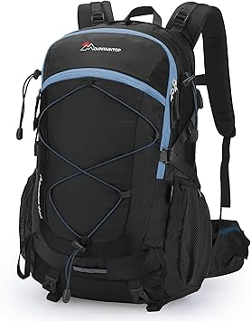

⭐️⭐️⭐️⭐️⭐️ “This backpack survived my 3-month trip through South America. Great comfort and storage space!” — Ana R.

$89.99
The ultimate travel companion for adventurers. Designed with durability, comfort, and versatility in mind, the GlobeTrekker 45L Adventure Backpack is ideal for long journeys, weekend hikes, and urban exploration.
- Capacity: 45 liters
- Water-resistant, tear-proof fabric
- Padded back and ergonomic shoulder straps
- Expandable compartments and laptop sleeve
- Multiple exterior pockets with zippers